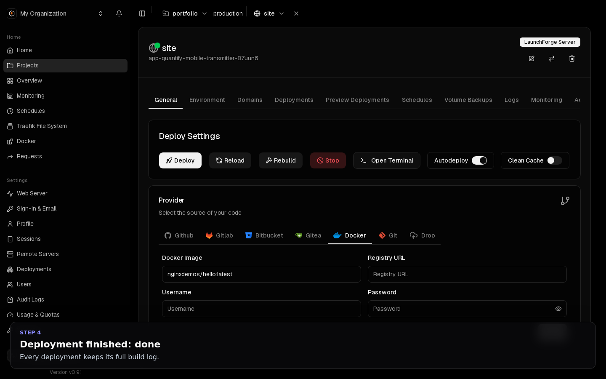

Deploy
Deploys and rollbacks
How a release replaces the running version without downtime, how to deploy on every push, and how to go back.
How a deploy works#
- A deploy starts from the Deploy button, a push to the branch (with Autodeploy on), a deploy webhook or an API call.
- LaunchForge queues the deployment. The queue is stored in the database, so deployments queued while the dashboard restarts are resumed, and a build that was running is restarted.
- A worker clones the repository and builds an image. Builds stop after
BUILD_TIMEOUT_SECONDS(default 3600). - The new version starts next to the old one.
- Traffic moves to the new version once it is running, and healthy if you set a health check. The old version then stops.
If the new version crashes repeatedly, fails its health check, or does not become healthy within DEPLOY_HEALTH_TIMEOUT_SECONDS (default 120 seconds), the deployment fails and the previous version keeps serving.
Deploy on every push#
Turn on General → Autodeploy for an application connected through a Git provider. Each push to the branch starts a deployment within seconds.
- Watch paths (General → Watch paths), such as
src/**andpublic/**, limit deploys to changes in those files, so editing the README does not redeploy. [skip ci]in the commit message skips the deployment.- Git webhooks from GitHub, GitLab, Gitea and Bitbucket are verified by signature. Deliveries with a wrong signature are rejected.
Health checks#
A deployment is reported done only when the new version is running. With a health check it must also pass the check, so a release that starts but serves errors never takes traffic. Health checks are strongly recommended.
Set one under Advanced → Swarm Settings → Health Check as Docker health check JSON:
{
"Test": ["CMD-SHELL", "wget -qO- http://localhost:80/ || exit 1"],
"Interval": 10000000000,
"Timeout": 5000000000,
"Retries": 3,
"StartPeriod": 15000000000
}Use your app's port in the URL. Durations are in nanoseconds.
Note
If a slow app needs more than 120 seconds to become healthy, the operator can raise DEPLOY_HEALTH_TIMEOUT_SECONDS. See Configuration reference.
The Deployments tab#
Every deployment is listed with its live build log, commit, duration and status (running, done, error or cancelled). Cancel stops a running build of this service only.

Rollbacks#
- Open Advanced → Rollback Settings, enable rollbacks and choose a registry.
- Every deployment from then on pushes a tagged image to that registry.
- Deployments → Rollback on any earlier deployment redeploys that version, with the configuration it had at that time, in seconds and without rebuilding.
Secrets in rollback snapshots are encrypted.
Preview deployments#
On GitHub repositories, the Preview Deployments tab gives each pull request its own build, container and URL, with its own environment variables, and posts a comment on the pull request. The preview is removed when the pull request closes.
You can limit the number of concurrent previews, and require that the pull request author has write access to the repository.
Notifications#
Settings → Notifications sends a message for every deployment: done, or build failed. Slack, Discord, Telegram, email and more are supported; see Monitoring and logs.